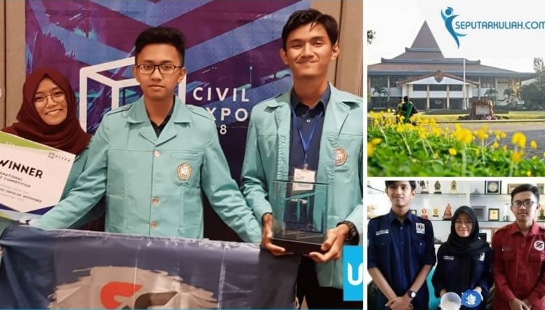

Sep 29, 2018
Mahasiswa Teknik Sipil UNS Sulap Tulang Sapi dan Marmer Jadi Beton

Mahasiswa Universitas Sebelas Maret (UNS) Surakarta menciptakan inovasi teknologi beton mutu tinggi dengan menggunakan limbah marmer dan tulang sapi. Mereka adalah Adhirajasa, Yesika Azzukhruf, Panji Pramayswara Pamilih dan Farhan Nurfi Afriansyah, mahasiswa D3 Teknik Sipil (FT). Keempat mahasiswa yang tergabung dalam grup Semar Solid itu menciptakan sebuah betok jenis Self Compacting Concrete(SCC). read more


| Berita Terkini |
|---|
| Faperta Unpad Jalin Kerja Sama dengan Faperta Universitas Borneo Tarakan |
| FKG Unpad Gelar “Gotra Sawala” Peringati Dies Natalis ke-59 |
| Lebih dari 500 Penulis dari 9 Negara Hadiri Konferensi Internasional PKSPL IPB |
| Paduan Suara Mahasiswa Agriaswara IPB Diundang Tampil di Jepang |
| 11 Tahun Berturut-turut Inovasi IPB Terbanyak di Inovasi Indonesia Paling Prospektif |